10 Pretty Plots
Laden Sie die folgenden Packages und Data Frames:
library(tidyverse)## ── Attaching packages ─────────────────────────────────────── tidyverse 1.3.1 ──## ✓ ggplot2 3.3.5 ✓ purrr 0.3.4
## ✓ tibble 3.1.4 ✓ dplyr 1.0.7
## ✓ tidyr 1.1.3 ✓ stringr 1.4.0
## ✓ readr 2.0.1 ✓ forcats 0.5.1## ── Conflicts ────────────────────────────────────────── tidyverse_conflicts() ──
## x dplyr::filter() masks stats::filter()
## x dplyr::lag() masks stats::lag()library(magrittr)##
## Attaching package: 'magrittr'## The following object is masked from 'package:purrr':
##
## set_names## The following object is masked from 'package:tidyr':
##
## extractlibrary(gridExtra)##
## Attaching package: 'gridExtra'## The following object is masked from 'package:dplyr':
##
## combineurl <- "http://www.phonetik.uni-muenchen.de/~jmh/lehre/Rdf"
asp <- read.table(file.path(url, "asp.txt")) %>% as_tibble()
coronal <- read.table(file.path(url, "coronal.txt")) %>% as_tibble()
vdata <- read.table(file.path(url, "vdata.txt")) %>% as_tibble()
int <- read.table(file.path(url, "intdauer.txt")) %>% as_tibble()ggplot2 bietet Ihnen vielfältige Möglichkeiten, Ihre Abbildungen zu verschönern und zu individualisieren. Hier stellen wir Ihnen die wichtigsten Spezifikationen vor.
10.1 Achsenbeschriftungen
Die Beschriftungen der Achsen wird mit xlab() bzw. ylab() erstellt. Einen Titel können Sie mit ggtitle() hinzufügen:
ggplot(asp) +
aes(x = Kons, y = d) +
geom_boxplot() +
xlab("Artikulationsstelle") +
ylab("Dauer (ms)") +
ggtitle("Boxplot-Daten")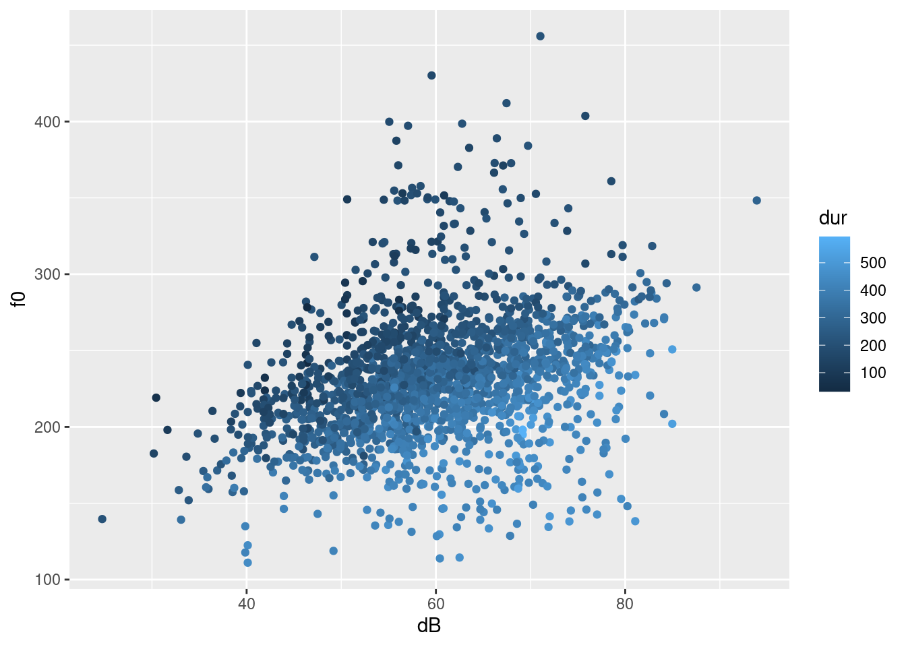
Ansonsten können Sie auch labs() nutzen für alle Labels zusammen:
ggplot(coronal) +
aes(x = Region, fill = Fr) +
geom_bar(position = "fill") +
labs(x = "Region",
y = "Proportion",
title = "Proportionale Aufteilung von Frikativen",
subtitle = "Aufgeteilt nach Region")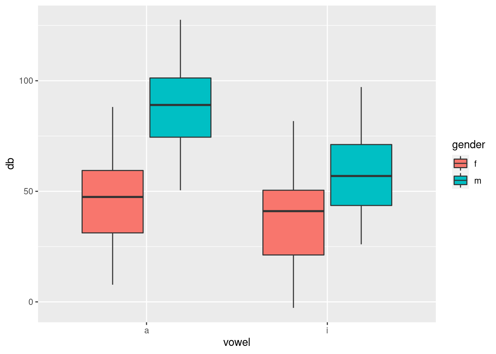
10.2 Koordinatensystem begrenzen
Um den sichtbaren Bereich eines Plots zu begrenzen oder zu erweitern, können Sie die folgenden Funktionen verwenden. Diese haben jedoch unterschiedliche “Nebenwirkungen” (s. auch hier):
xlim()und/oderylim()bzw.scale_x_continuous(limits = c())und/oderscale_y_continuous(limits = c()): Eliminiert Datenpunkte beim Heranzoomen und wirft eine Warnmeldung. Dies beeinflusst ggf. Regressionslinien und andere überlagerte Abbildungskomponenten.coord_cartesian(xlim = c(), ylim = c()): Blendet die Datenpunkte nur aus und wirft daher keine Warnmeldung. Dies beeinflusst Regressionslinien und andere überlagerte Abbildungskomponenten nicht.
# ohne Achsenbeschränkung:
ggplot(int) +
aes(x = dB, y = Dauer) +
geom_point()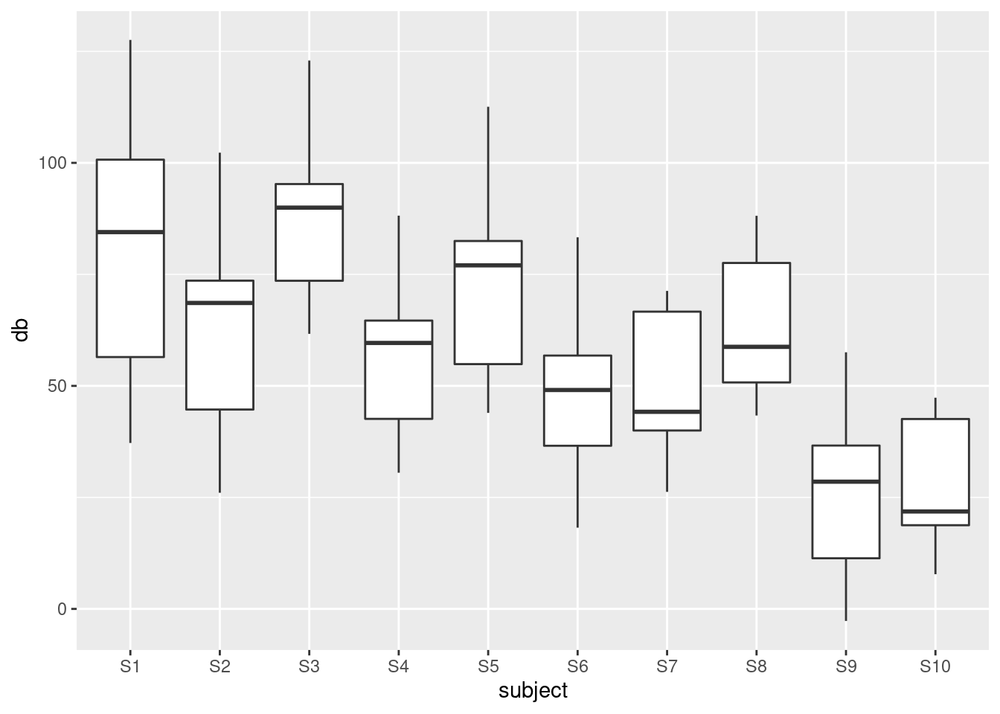
# mit coord_cartesian()
ggplot(int) +
aes(x = dB, y = Dauer) +
geom_point() +
coord_cartesian(xlim = c(10,40),
ylim = c(30,280))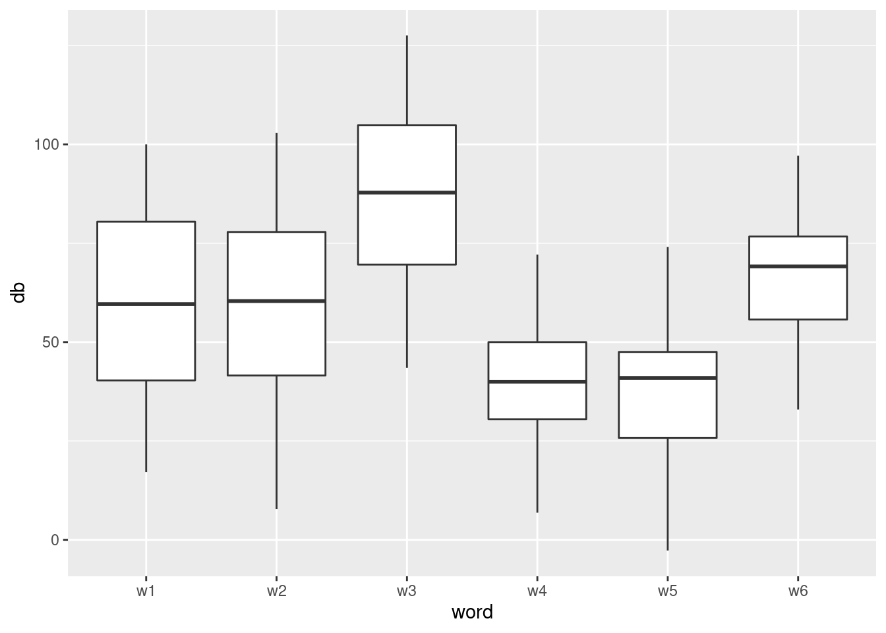
# mit xlim() und ylim()
ggplot(int) +
aes(x = dB, y = Dauer) +
geom_point() +
xlim(10, 40) +
ylim(30, 280)## Warning: Removed 2 rows containing missing values (geom_point).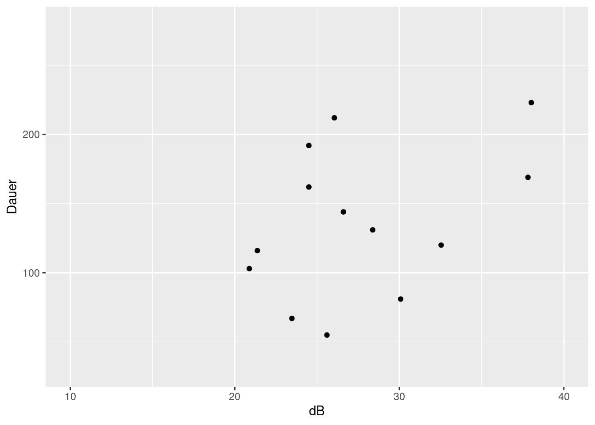
10.3 Farben
ggplot2 verwendet standardmäßig immer dieselbe Farbpalette. Ihnen stehen aber deutlich mehr Farben zur Verfügung, wie Ihnen diese Farbauswahl zeigt. Die Farbnamen bekommen Sie auch mit:
colors()# die ersten 10 anzeigen:
colors()[1:10]## [1] "white" "aliceblue" "antiquewhite" "antiquewhite1"
## [5] "antiquewhite2" "antiquewhite3" "antiquewhite4" "aquamarine"
## [9] "aquamarine1" "aquamarine2"Ihre Farbauswahl teilen Sie mit den Argumenten col (Umriss- bzw. Linienfarbe) bzw. fill (Füllfarbe) im aesthetic mapping mit. Wenn wir die Variable Kons in folgendem Boxplot farb-kodieren wollen, sieht das so aus:
# mit "fill" (empfohlen für Boxplots!)
ggplot(asp) +
aes(x = Kons, y = d, fill = Kons) +
geom_boxplot()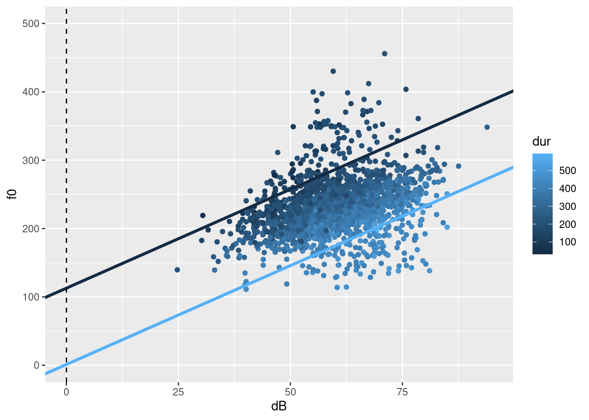
# mit "col"
ggplot(asp) +
aes(x = Kons, y = d, col = Kons) +
geom_boxplot()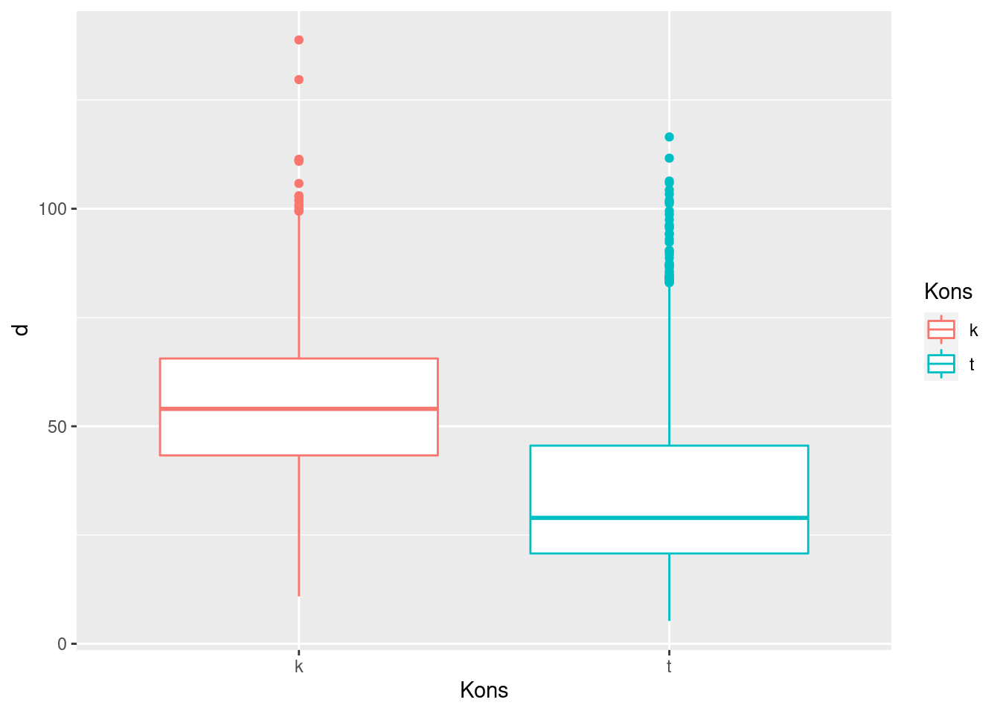
Wie Sie sehen, wurde diesen zwei Plots automatisch eine Legende hinzugefügt, die aufschlüsselt, welche Farben für welche Werte der Variable Kons verwendet wurden. Jetzt wollen wir unsere Farben selbst auswählen:
# "fill" mit eigenen Farben
farben <- c("darkgoldenrod1", "navy")
ggplot(asp) +
aes(y = d, x = Kons, fill = Kons) +
geom_boxplot(fill = farben)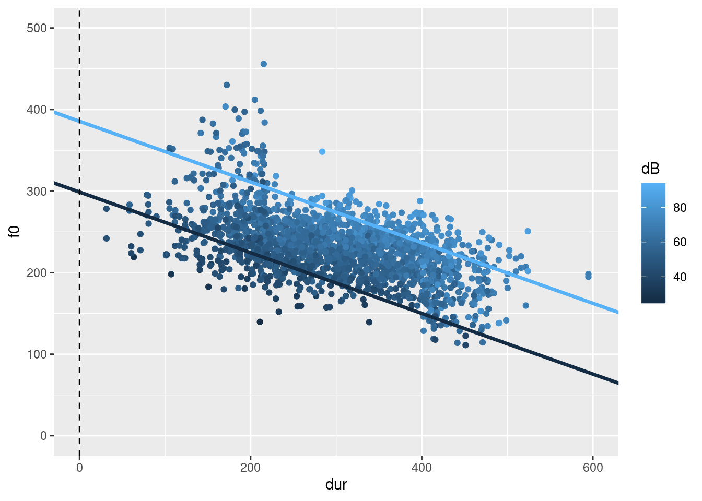
Hier gibt es keine Legende. Wenn wir bei selbst gewählten Farben eine Legende haben wollen, benutzen wir eine Funktion namens scale_color_manual() bzw. scale_fill_manual():
# "fill" mit eigenen Farben
farben <- c("darkgoldenrod1", "navy")
ggplot(asp) +
aes(y = d, x = Kons, fill = Kons) +
geom_boxplot() +
scale_fill_manual(values = farben)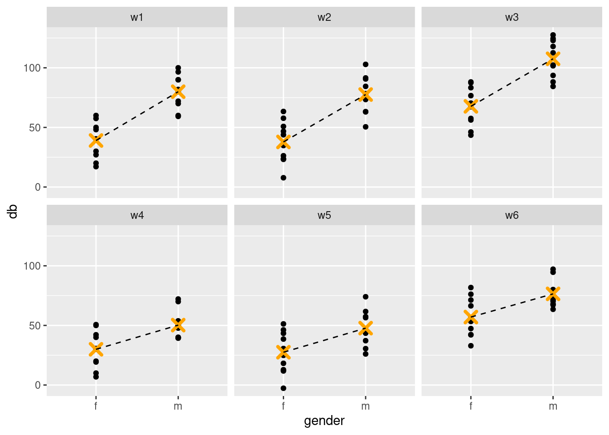
# dasselbe für den Barplot
ggplot(coronal) +
aes(x = Region, fill = Fr) +
geom_bar() +
scale_fill_manual(values = farben)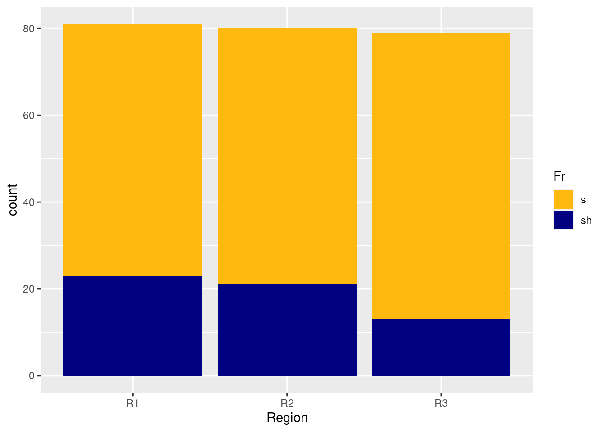
Für Boxplots gibt es übrigens die Möglichkeit, die Outlier uabhängig von der Box zu gestalten:
farben <- c("darkgoldenrod1", "navy")
ggplot(asp) +
aes(y = d, x = Kons, fill = Bet) +
geom_boxplot(outlier.color = "red",
outlier.shape = 4,
outlier.size = 3) +
scale_fill_manual(values = farben)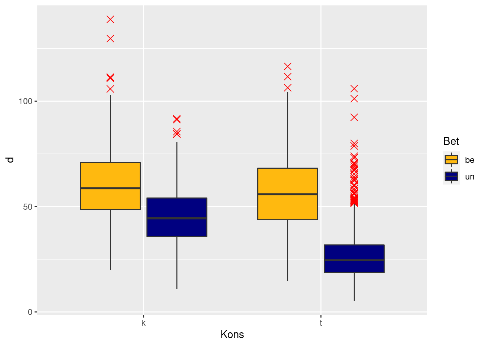
10.4 Weitere Spezifikationen
Es gibt natürlich noch deutlich mehr Spezifikationen für die einzelnen Abbildungstypen als die Farbe, z.B. die Zeichengröße, den Linientyp, die Punktform, die Schriftart…
col: Umriss- bzw. Linienfarbefill: Füllfarbeshape: Formsize: Größelty: Linientypstroke: Dicke für Text
Dazu gibt es eine Vignette:
vignette("ggplot2-specs")Einige dieser Spezifikationen wenden wir hier an:
ggplot(int) +
aes(x = dB, y = Dauer) +
geom_point(col = "purple",
size = 3,
shape = 0) +
geom_line(col = "orange",
size = 1.5,
lty = "twodash")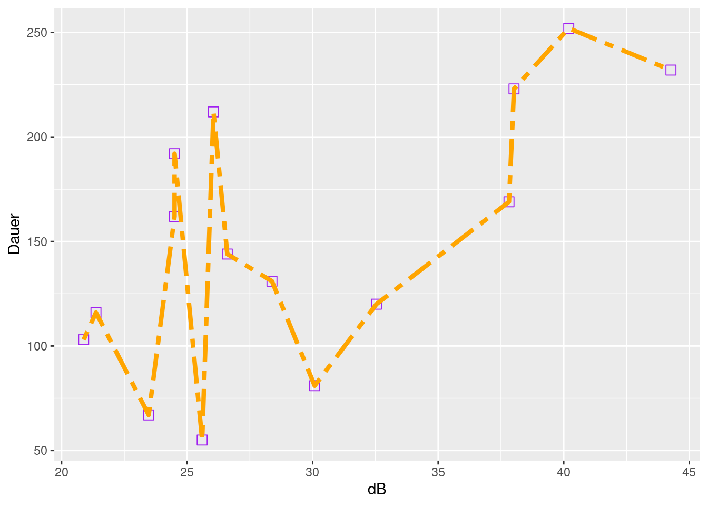
Sie sollten sich aber natürlich immer sorgfältig überlegen, ob eine Spezifikation notwendig ist, um die Abbildung klarer zu gestalten.
10.5 Schriftzeichengröße
Die Default-Schriftzeichengröße der Achsenbeschriftung und Titel ist 11pt oder kleiner. Vor allem wenn Sie Ihre Plots präsentieren, ist es SEHR wichtig, dass Sie die Schriftzeichengröße verändern. Wir empfehlen mind. 16-24pt. Hierfür müssen wir das theme() ändern.
ggplot(asp) +
aes(x = Kons, y = d) +
geom_boxplot() +
xlab("Artikulationsstelle") +
ylab("Dauer (ms)") +
ggtitle("Boxplot-Daten") +
theme(text = element_text(size = 24), # Beschriftungen & Titel
axis.text = element_text(size = 18)) # Achsenbeschriftungen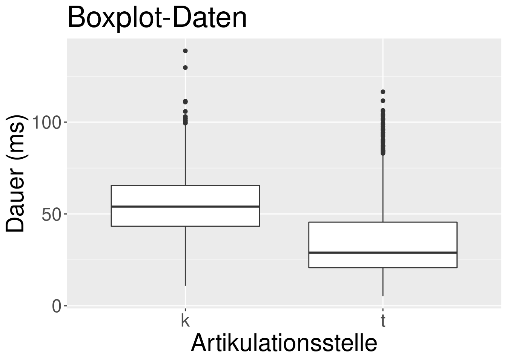
Weiterführende Infos: theme()
Das theme() ist z.B. für die Hintergrundfarbe der Plots, die Achsen, und vieles weitere zuständig. Diese Übersicht an Argumenten der Funktion theme() zeigt Ihnen, wie viel Sie damit einstellen können.
10.6 Plots unterteilen und anordnen
10.6.1 Plots unterteilen
ggplot2 bietet zwei Möglichkeiten, einen Plot in mehrere zu unterteilen: facet_wrap() und facet_grid(). Hauptargument dieser Funktionen ist/sind die üblicherweise kategoriale(n) Variable(n), deren Werte in getrennten Panels dargestellt werden sollen. Zum Beispiel können wir die Datenpunkte, die mit unterschiedlichen Phonemen assoziiert sind, in getrennten Panels darstellen.
Die Formeln, um die Variablen anzugeben, sehen wie folgt aus:
.~Var1bzw.~Var1Var1~.(Punkt muss da sein!)Var1~Var2Var1+Var2~Var3Var1~Var2+Var3
Es bietet sich nicht an, mehr als drei Variablen in facet_wrap() oder facet_grid() zu verwenden, da dies die Übersichtlichkeit des Plots deutlich einschränkt.
facet_wrap() ordnet die Panels eines Plots in Reihen und Spalten an.
# aufteilen nach Versuchsperson
ggplot(vdata) +
aes(x = F1, y = F2) +
geom_point() +
facet_wrap(~Subj)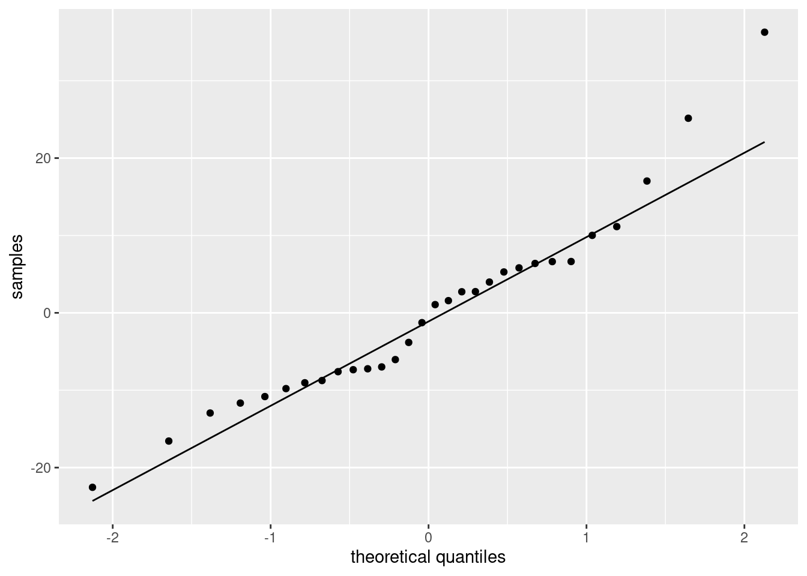
# aufteilen nach Versuchsperson und Gespanntheit
ggplot(vdata) +
aes(x = F1, y = F2) +
geom_point() +
facet_wrap(Subj~Tense)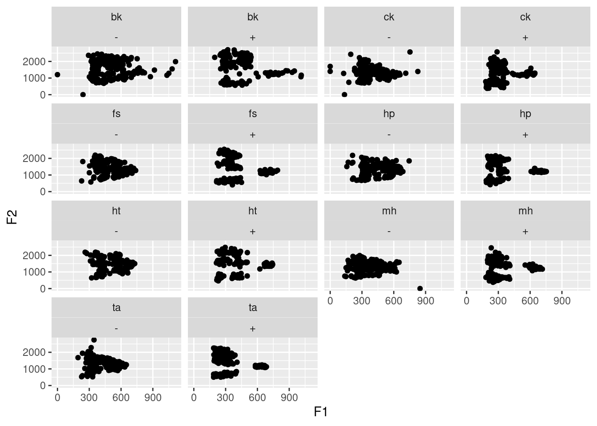
facet_grid() hingegen ordnet in Zeilen oder Spalten. Die Reihenfolge für die Formel ist facet_grid(Zeilen~Spalten)
# aufteilen nach Versuchsperson in Zeilen
ggplot(vdata) +
aes(x = F1, y = F2) +
geom_point() +
facet_grid(Subj~.)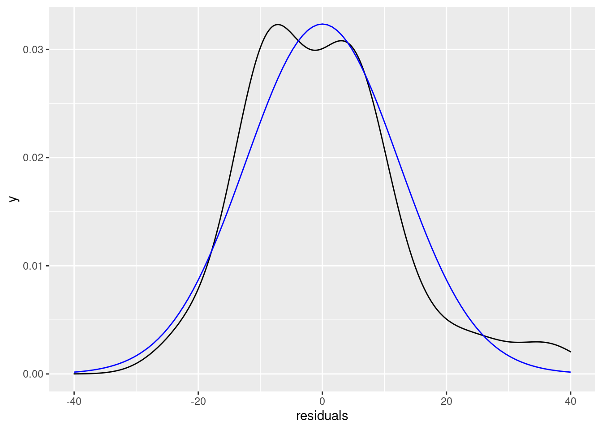
# aufteilen nach Versuchsperson in Spalten
ggplot(vdata) +
aes(x = F1, y = F2) +
geom_point() +
facet_grid(~Subj)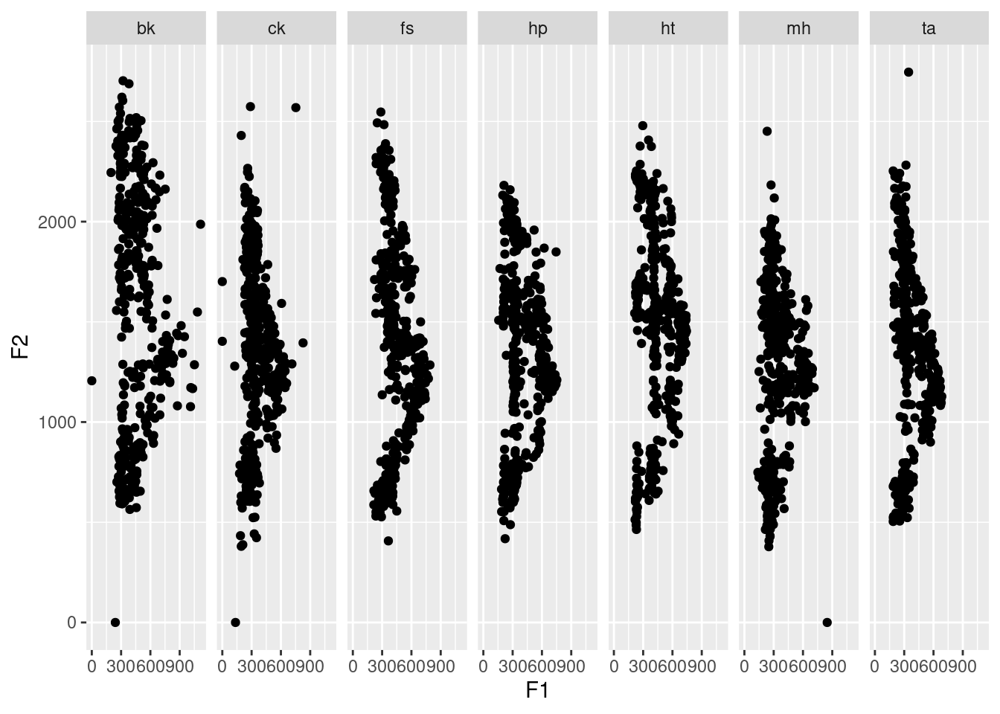
# aufteilen nach Versuchsperson und Tense
ggplot(vdata) +
aes(x = F1, y = F2) +
geom_point() +
facet_grid(Subj~Tense)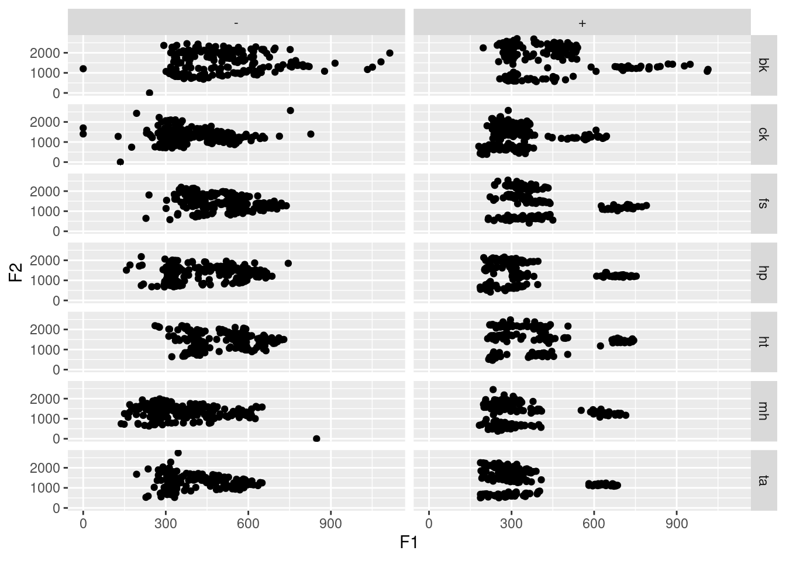
10.6.2 Plots anordnen
Des Weiteren gibt es die Möglichkeit, mehrere Plots neben- oder untereinander anzuordnen. Hierfür verwenden wir die Funktion grid.arrange() die oben geladene Library gridExtra.
plot1 <- ggplot(asp) +
aes(x = Kons, y = d) +
geom_boxplot()
plot2 <- ggplot(coronal) +
aes(x = Region, fill = Fr) +
geom_bar()
plot3 <- ggplot(int) +
aes(x = dB, y = Dauer) +
geom_line() + geom_point()
# in drei Spalten und einer Zeile anordnen
grid.arrange(plot1, plot2, plot3, ncol = 3, nrow = 1)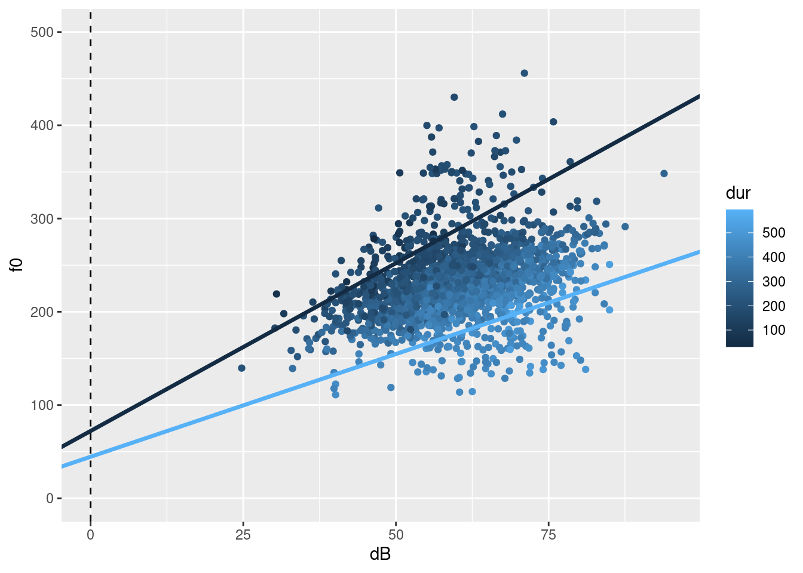
# in einer Spalte und drei Zeilen anordnen
grid.arrange(plot1, plot2, plot3, ncol = 1, nrow = 3)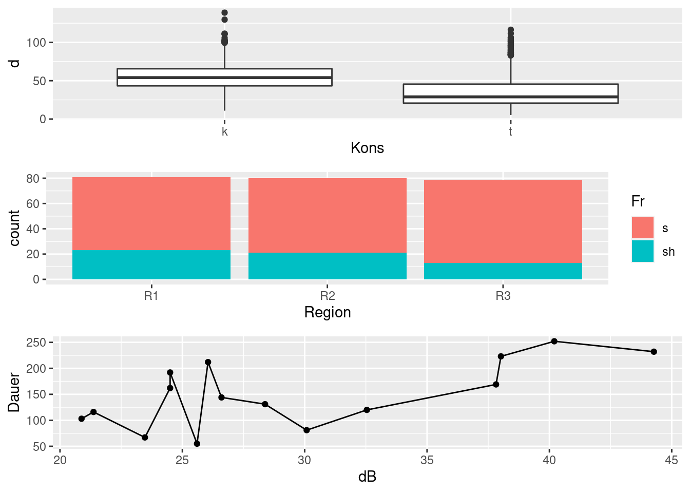